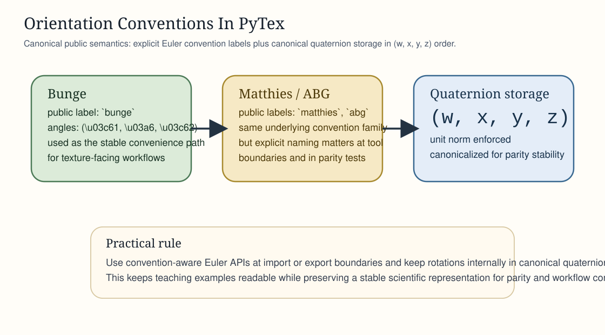
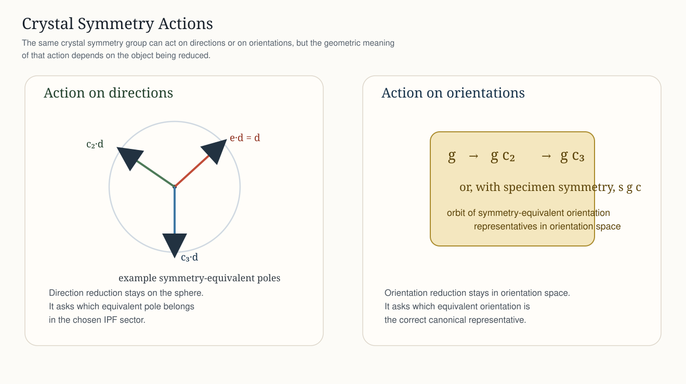
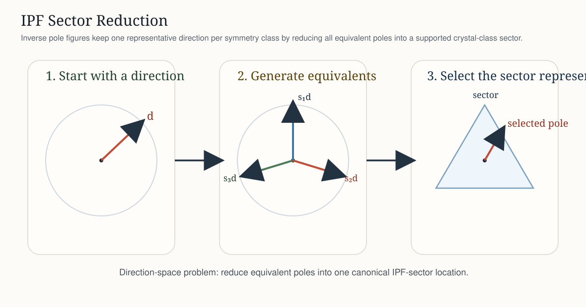
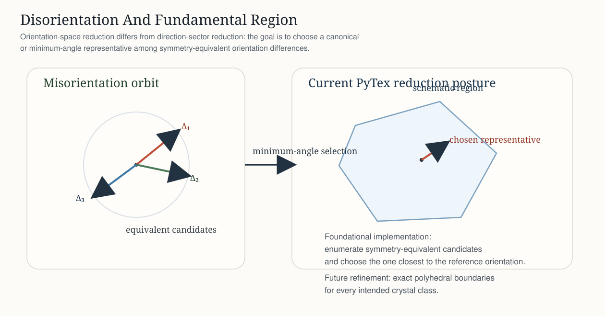
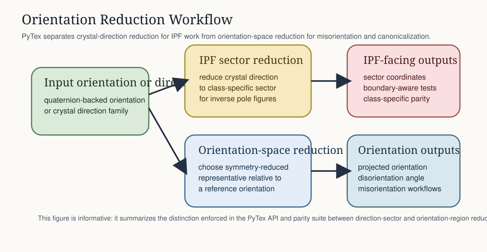

Orientation And Texture¶
The orientation and texture layer fixes semantics first and then grows algorithms on top of those semantics. This is why PyTex starts with convention-aware rotations, symmetry-aware misorientation, and explicit pole-figure or inverse-pole-figure objects before attempting broader plotting or inversion breadth.
What The Layer Covers¶
At this stage, PyTex provides a coherent orientation foundation for:
quaternion-backed rotations
Bunge, Matthies, and ABG Euler import and export
symmetry-aware misorientation and disorientation
class-specific IPF sector reduction for supported point groups
explicit projection of orientations to symmetry-reduced representatives
explicit symmetry-reduced fundamental-region keys for stable orientation comparison
kernel-based ODF evaluation and PF reconstruction
explicit IPF color-key generation from symmetry-reduced crystal directions
Why Conventions Matter¶
Orientation work becomes unreliable as soon as a library leaves the rotation convention implicit. The same three numbers can mean different ordered axes, active versus passive interpretations, or radians versus degrees. PyTex therefore exposes convention-aware conversion entry points and keeps the stable Bunge helpers as explicit convenience APIs.

Euler And Quaternion Semantics In PyTex¶
Euler Conventions¶
bunge: the familiar ZXZ-style convention used widely in texture analysismatthies: a ZYZ-style convention used in several texture and diffraction contextsabg: exposed explicitly because tool chains often label Matthies-style angles asalpha, beta, gamma
Quaternion Storage¶
PyTex stores quaternions in canonical (w, x, y, z) order, enforces unit normalization, and exposes conversion methods that keep sign-equivalent quaternions from becoming a hidden source of instability in tests or workflow boundaries.
Note
PyTex follows its own explicit stable API names and documents MTEX parity as validation, not as a license to inherit every MTEX public naming choice.
Symmetry Reduction And Fundamental Regions¶
Two different reduction problems matter in practice:
reducing a crystal direction into the correct inverse-pole-figure sector
reducing an orientation or misorientation into a symmetry-reduced representative in orientation space
Those problems are related but not identical. PyTex keeps them distinct in both the code and the documentation so that parity tests can target the correct mathematical surface.
Important
For the full mathematical and geometric explanation, read Symmetry Reduction And Fundamental Regions. That page is the canonical Sphinx walkthrough for symmetry action, orbit construction, direction-sector reduction, orientation representative selection, and disorientation.

Symmetry Actions On Directions And Orientations¶
Crystal symmetry acts on more than one mathematical object in this layer.
for direction reduction, symmetry acts on unit vectors and produces symmetry-equivalent poles
for orientation reduction, symmetry acts on orientations and generates an orbit of equivalent representations
for disorientation, the relevant result is the minimum-angle representative within that orbit
The important teaching point is that “apply symmetry” does not mean “always do the same operation.” The geometric object being reduced determines the correct symmetry action.

Inverse Pole Figure Sectors¶
An inverse pole figure does not keep every symmetry-equivalent crystal direction. Instead, it reduces all equivalent directions into a single class-specific sector. PyTex implements that reduction explicitly for the currently supported point groups.
start from a crystal direction family
generate all symmetry-equivalent directions
select the representative that lies in the supported IPF sector
This is a direction-space reduction problem, not an orientation-space one.

Disorientation And Orientation-Space Reduction¶
When PyTex reduces an orientation or compares two orientations under symmetry, the object being reduced lives in orientation space rather than on the unit sphere of directions.
a misorientation gives one rotational difference before symmetry reduction
symmetry generates equivalent candidates
the current PyTex implementation selects the exact minimum-angle symmetry representative in the quaternion hemisphere, or the closest representative to a supplied reference orientation when a workflow needs reference-aware projection
This is why the documentation and parity suite treat IPF-sector reduction and fundamental-region reduction as distinct surfaces.

Implemented¶
Bunge and Matthies or ABG Euler import and export on quaternion-backed rotations
symmetry-aware misorientation and disorientation
pole-figure and inverse-pole-figure containers
class-specific IPF sector reduction for supported point groups
explicit orientation projection to a symmetry-reduced representative relative to a reference orientation
explicit symmetry-reduced fundamental-region keys for parity and workflow comparison
kernel-based ODF evaluation and PF reconstruction
Still Ahead¶
closed-form class-by-class boundary catalogs for the exact orientation-space regions
harmonic ODF expansion and PF-to-ODF inversion
full MTEX-level parity for IPF color coding and richer rendered plotting surfaces
{kind=link}
{kind=link}
{kind=link}
{kind=link}
{kind=link}
{kind=link}
References¶
Normative¶
docs/standards/notation_and_conventions.mddocs/architecture/orientation_and_texture_foundation.md
Informative¶
Nolze et al., Texture measurements on quartz single crystals to validate coordinate systems for neutron time-of-flight texture analysis
MTEX documentation: Misorientations
Bunge, Texture Analysis in Materials Science (1982)